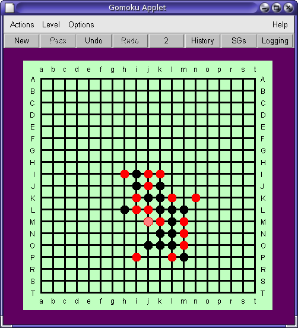

Return to index or to leave Help, click on the Help drop-down menu.
Gomoku is a 5-in-a-row noughts and crosses game played on a 19 x 19 grid. The game is for two players. In this implementation, the computer plays red and its human opponent plays black. The computer offers the first move to its human opponent, though this first move may be passed. Play alternates between the two players. A move consists of placing a piece (black for the human, red for the computer) at any free intersection on the grid. To place your piece, just click on an intersection.
The aim is to make a line of 5 pieces of the same colour in any direction (horizontal, vertical or either of the diagonal directions).

In the traditional game, more than 5 pieces in a row does not count as a win. As this sometimes comes as a surprise, a popup message, reminding players of this rule, is displayed whenever a line of more than 5 pieces is constructed. An option is provided to relax this rule but the option setting cannot be changed mid game.
This implementation is strictly heuristic. There is no look ahead.
Moves are based on the recognition of patterns encountered in earlier
play or previous games. For more information see
Heuristics.
Next Page